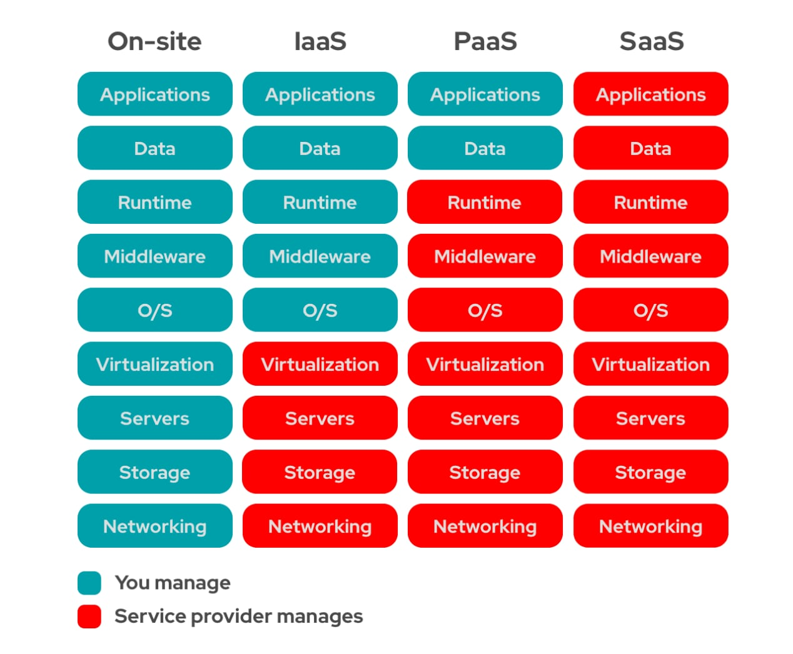

Computação em nuvem é a entrega sob demanda de poder computacional, armazenamento de banco de dados, aplicativos e outros recursos de TI por meio de uma plataforma de serviços em nuvem via Internet, com precificação pay-as-you-go.
Essa abordagem oferece uma maneira simples de acessar servidores, armazenamento, bancos de dados e um amplo conjunto de serviços de aplicativos pela Internet.
A AWS possui e mantém o hardware conectado à infraestrutura necessária para executar esses serviços, enquanto você provisiona e utiliza o que precisa por meio de uma aplicação web.
Ao adotar a computação em nuvem, você aproveita diversas vantagens:
Pague apenas pelos recursos de computação que consome, eliminando a necessidade de investir antecipadamente em data centers e servidores.
A computação em nuvem permite custos variáveis mais baixos, graças à agregação do uso de centenas de milhares de clientes.
Elimine a adivinhação sobre suas necessidades de capacidade, obtendo acesso flexível e escalável conforme necessário.
Desenvolva e disponibilize recursos de TI em minutos, proporcionando maior agilidade organizacional.
Concentre-se em projetos diferenciais, deixando a infraestrutura para provedores de nuvem como a AWS.
Implante aplicativos em várias regiões do mundo com facilidade, proporcionando uma melhor experiência para os clientes.
Existem três modelos comuns de computação em nuvem:

Contém os componentes básicos da TI em nuvem e, geralmente, dá acesso (virtual ou no hardware dedicado) a recursos de rede e computadores, como também espaço para o armazenamento de dados.
Um exemplo comum de IaaS na AWS é o Amazon EC2, do qual você tem acesso virtual a recursos de computação na nuvem.
Elimina a necessidade de gerenciar a infraestrutura subjacente, permitindo que você se concentre no desenvolvimento e gerenciamento de aplicativos.
Um exemplo comum de PaaS na AWS é o Amazon RDS, do qual você não tem a necessidade de gerenciar a infraestrutura subjacente para iniciar um banco de dados relacional.
Não é necessário saber em como o serviço é mantido ou como a infraestrutura subjacente é gerenciada, você só precisa pensar em como usará este tipo específico de software.
Um exemplo comum de aplicação do SaaS é o webmail, no qual você pode enviar e receber e-mails sem precisar gerenciar recursos adicionais para o produto de e-mail ou manter os servidores e sistemas operacionais no qual o programa de e-mail está sendo executado.
Existem três tipos comuns de implantação em nuvem:
Totalmente implantada na nuvem, com todas as partes da aplicação em execução na nuvem.
Conecta recursos em nuvem AWS, a recursos existentes fora da nuvem (ambiente on-premises), proporcionando uma integração híbrida entre esses ambientes.
Nuvem gerenciada internamente, usando virtualização e ferramentas de gerenciamento de recursos.